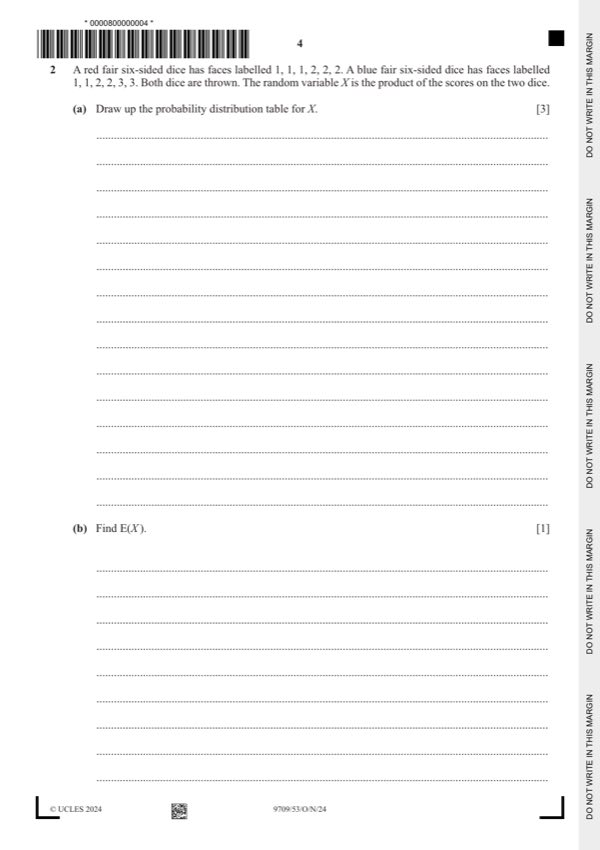
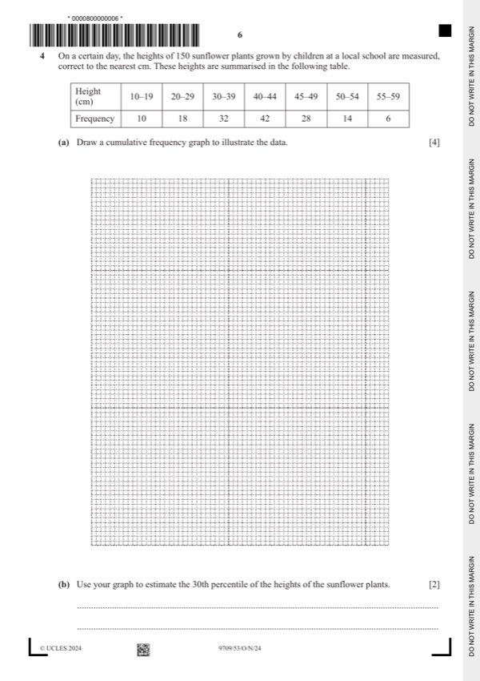
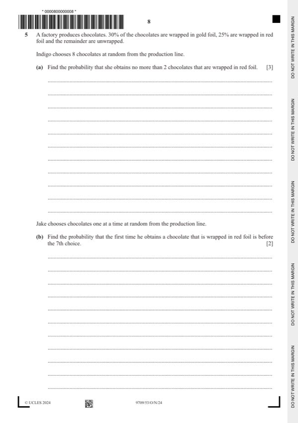
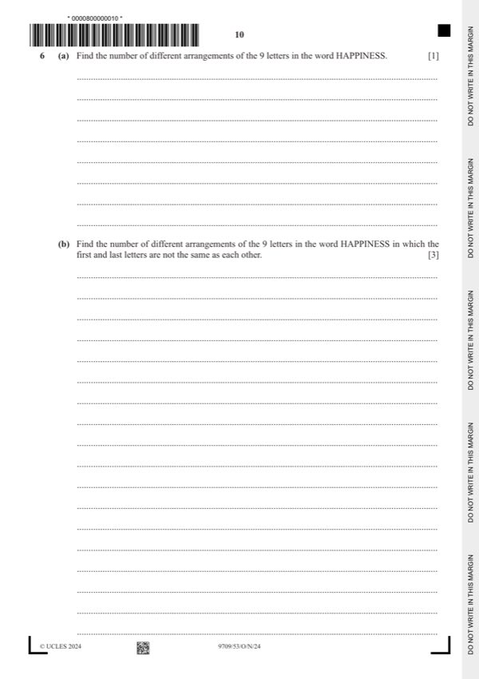

Question 0
Part 0 — solution
- [A1] Correct expression, accept unsimplified,
- [B1] AWRT
Mark points
- [A1] Correct expression, accept unsimplified,
- [B1] AWRT
Step-by-step solutions based on the mark scheme (not a mark-scheme dump).
Part 0 — solution
Part 1(a) — solution
Part 1 — solution
Part 1 — solution
Answer: 100
Part 1(b) — solution
Answer: 105
Part 1 — solution
Part 1 — solution
Answer: 4096
Part 1 — solution

Part 2 — solution
Part 2(a) — solution
Part 2 — solution
Part 2 — solution
Part 2 — solution
Part 2 — solution
Part 3 — solution
Part 3(a) — solution
Part 3 — solution
Part 3 — solution

Part 4(a) — solution
Part 4(b) — solution
Part 4 — solution
Part 4 — solution
Part 4 — solution

Part 5(a) — solution
Part 5(b) — solution
Part 5(c) — solution
Part 5(c) — solution
Part 5 — solution
Part 5 — solution
Part 5 — solution
Part 5 — solution

Part 6 — solution
Part 6 — solution
Part 6(a) — solution
Part 6(b) — solution
Part 6(c) — solution
Part 6(d) — solution
Part 8 — solution
Part 9 — solution
Part 9 — solution
Answer: C5
Part 10 — solution
Answer: 150
Part 10 — solution
Part 20 — solution
Answer: 126 63
Part 30 — solution
Answer: 121
Part 30 — solution
Answer: A1 · 121
Part 36 — solution
Part 63 — solution
Answer: 3